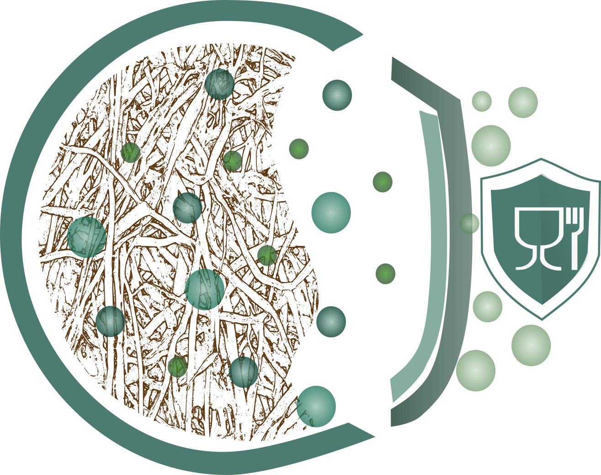

PhD Researcher in biotechnology| CBQF-Universidade Católica Portuguesa
Safety Assessment of Novel Cellulose-Based Food Contact Materials
I am a PhD researcher investigating the chemical safety of novel cellulose-based food contact materials. My work focuses on the relationship between sustainability, circularity, and food safety, particularly in the use of less-explored virgin fibres, currently driven by compliance- recycled fibres, PFAS-free materials, and innovative packaging solutions. Through migration studies and regulatory assessment, I evaluate potential risks associated with substances that may transfer from packaging to food, supporting the development of safe and sustainable alternatives to conventional materials.
Currently, I am diving deeper into understanding migration of dialkyl ketones (DAKs) from alkyl ketene dimer (AKD) sized moulded pulp catering trays. DAKs have been addressed as a non-intentionally added substance (NIAS) classified as Cramer class II (intermediate toxicity). DAKs can potentially migrate to fatty foods and are restricted by regulatory bodies. A part of this work has already been presented at the SLIM conference 2026 "Modelling migration of dialkyl ketones (DAKs) from food contact moulded pulp trays with alkyl ketene dimer (AKD) sizing". The full work in-press.
Journal of the Science of Food and Agriculture, 2023
Food Control, 2024
Packaging Technology and Science, 2025
Food Packaging and Shelf Life, 2025
Conference presentations and invited talks.
LinkedIn | GitHub | Email ORCID | Google Scholar